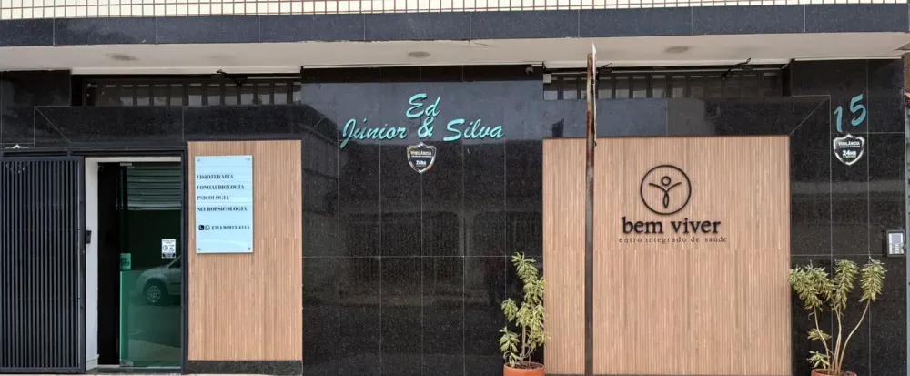
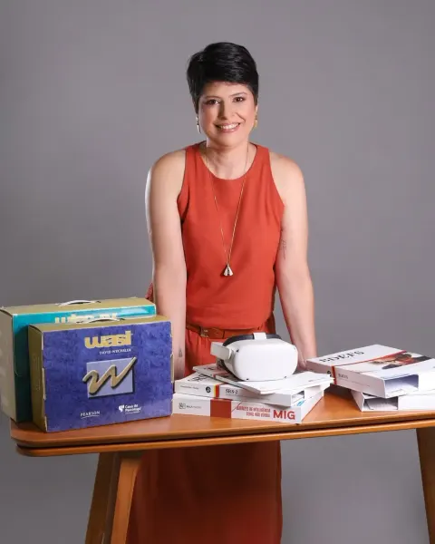
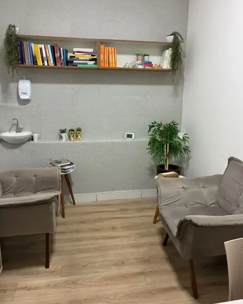
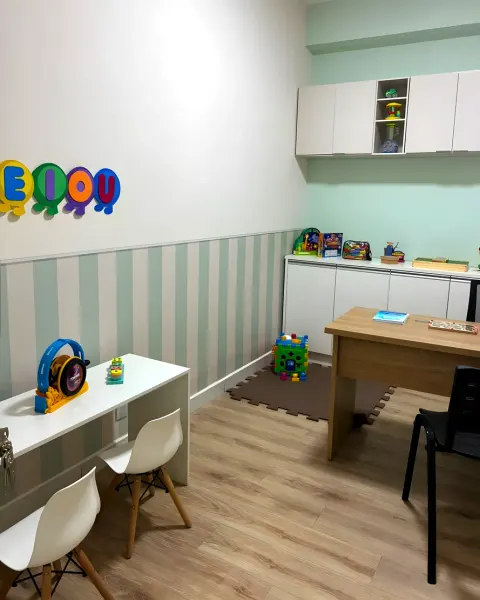
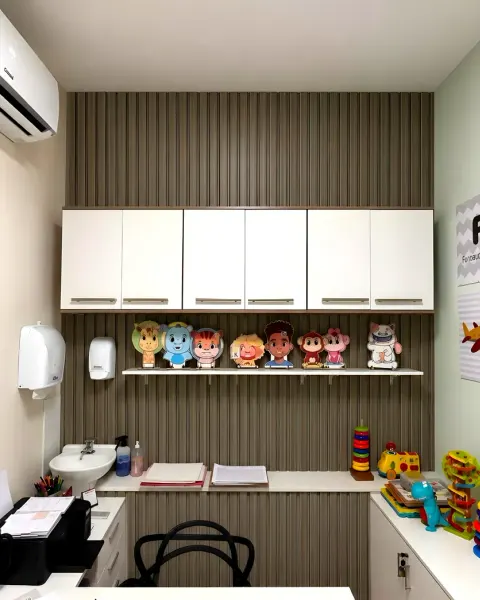
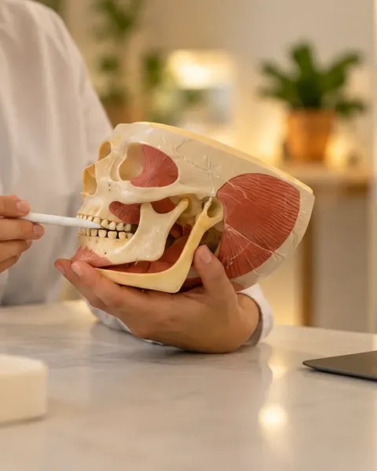
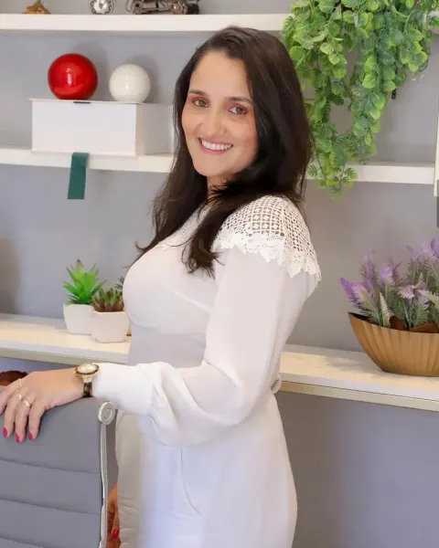

bemviverCentro integrado de saúde
Psicologia, fonoaudiologia, fisioterapia e nutrição no Jardim Panorama, em Ipatinga.
5,0 no Google
Particular e convênios
- Avaliar no GoogleLeva 1 minuto e ajuda outras famílias a nos encontrar
- Agendar pelo WhatsAppRecepção · (31) 98913-4114
- Inscrições abertas · vagas limitadasIPD, Inteligente Porém Disperso6 a 15 anos, em pequenos grupos. Começa em fevereiro de 2027
- Instagram@sejabemviver
- Site da clínicaEquipe, especialidades e dúvidas
- Como chegarRua dos Caiapós, 15 · Jardim Panorama
Especialidades

Avaliação neuropsicológica
Psicologia adulto
Psicologia infantojuvenil
Fonoaudiologia infantil
Fonoaudiologia adulto- Fisioterapia

Nutrição
Programas
O espaço
Bom saber
Horário
- Segunda e terça
- 8h às 17h
- Quarta
- 8h às 18h
- Quinta e sexta
- 8h às 17h
- Sábado e domingo
- Fechado
Onde fica
Rua dos Caiapós, 15, Jardim Panorama, Ipatinga/MG. Atendimento com horário agendado.
Convênios
 Usisaúde
Usisaúde- Vale
- Copasa
 Cemig Saúde
Cemig Saúde Cenibra
Cenibra- Cenibra Log
- Fundaffemg
- SulAmérica
- ParceriaAAPI
Conforme as regras de cada operadora. Conferir o meu
Clínica Bem Viver · Centro Integrado de Saúde · Ipatinga/MG
Desenvolvido por Marcelo Ribeiro